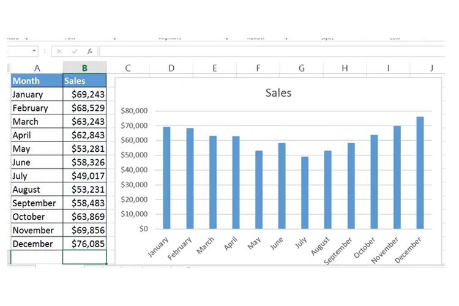

Microsoft Excel
Microsoft Excel adalah program perangkat lunak yang termasuk dalam paket Microsoft Office, yang digunakan untuk mengelola data dalam bentuk spreadsheet. Excel memungkinkan pengguna untuk melakukan perhitungan, analisis data, membuat grafik, serta menyimpan dan mengatur data secara efisien.
Komponen Utama MS.Excel
- Workbook (Buku Kerja): File utama yang berisi satu atau lebih lembar kerja (worksheet).
- Worksheet (Lembar Kerja): Halaman kerja di dalam workbook yang terdiri dari sel-sel yang tersusun dalam baris (row) dan kolom (column).
- Cell (Sel): Tempat untuk memasukkan data. Setiap sel memiliki alamat unik berdasarkan kolom dan barisnya (misalnya A1, B3).
- Row (Baris) dan Column (Kolom): Kolom diberi label dengan huruf (A, B, C, dll.), sedangkan baris diberi label dengan angka (1, 2, 3).
- Formula Bar (Bilah Formula): Tempat untuk melihat dan mengedit isi sel yang sedang dipilih, baik berupa data atau rumus.
Tipe Data dalam MS.Excel
- Angka (Number): Data numerik yang bisa digunakan dalam perhitungan.
- Teks (Text): Data dalam bentuk huruf atau simbol.
- Tanggal/Waktu (Date/Time): Data yang berisi tanggal atau waktu.
- Logika (Boolean): Data yang hanya berisi nilai TRUE atau FALSE.
Fungsi Dasar MS.Excel
- Penjumlahan (SUM): Menjumlahkan angka dalam rentang sel.
- Rata-rata (AVERAGE): Menghitung nilai rata-rata dari sekumpulan angka.
- Penghitungan Maksimum dan Minimum (MAX, MIN): Menemukan nilai terbesar atau terkecil dalam rentang data.
- Penghitungan Jumlah Data (COUNT): Menghitung jumlah sel yang berisi angka dalam rentang data.
- VLOOKUP/HLOOKUP: Mencari nilai dalam tabel berdasarkan kolom atau baris tertentu.
- IF: Membuat pernyataan logika untuk mengevaluasi kondisi dan menghasilkan nilai tertentu.
- SUMIF, COUNTIF: Menjumlahkan atau menghitung data berdasarkan kriteria tertentu.
- INDEX & MATCH: Digunakan untuk pencarian data yang lebih fleksibel dibandingkan dengan VLOOKUP.

Pembuatan Grafik
Excel memungkinkan pembuatan berbagai jenis grafik (chart) seperti grafik batang, grafik garis, grafik lingkaran, dan lainnya, untuk menyajikan data secara visual.
